1 The Bot
1.1 Reinforcement Learning
Reinforcement learning is the learning of a mapping from situations to actions so
as to maximize a scalar reward or reinforcement signal.
Richard S. Sutton
Exploration versus exploitation is an interesting trade-off; if an agent explores too
much, it risks spending too little time exploiting what it has learnt to its
advantage. If it explores too little, the agent risks missing out on the aquisition of
the optimal strategy.
Every reinforcement learning method is essentially trying to find a solution to the
following equation (and variations of it):
The State-Value function assigns an expected value E following a policy π by
adding the reward of taking an action from policy π in the current state
to the discounted (where γ is our discount factor) reward of the next
state. Throughout the literature review we will unpack and discuss this
equation.
It is worth defining at this point a few key terms of the domain:
Agent
The aspect of the problem under direct control; the learning and acting entity
that attempts to maximise the reward it receives.
Action
A method of the agent through which it interacts with and changes its
environment.
Discount Factor γ
A factor multiplying the future reward; a smaller discount factor signifies future
rewards are less important, and vice versa.
Environment
Everything that is not under direct sovereignty of the agent; everything the agent
can interact with.
Episode
The sequence of states between an initial state and a terminal state; a
play-through.
It is hard to find a concrete definition of these terms, however all the literature
cited in this review uses these terms in the same way. Other terminology will be
introduced as required.
Reinforcement Learning has a short but active history with two main threads of
origin; animal learning psychology and optimal control problems. Whilst
these two fields largely were largely independent of each other originally,
they eventually converged to form the field of reinforcement learning.
As noted by Watkins^2, there were mainly two types of experimental procedure
used in animal learning studies; instrumental learning and classical (or Pavlovian
) learning. The former entails reinforcement stimuli depending on the action of the
animal, whereas the latter consists of reinforcers contingent on an event,
regardless of the animals response. Omitting the detail Watkins goes into in his
thesis, the essence is that the function of instrumental learning is to find the
optimal behaviour given certain criteria; a performance critereon which
allows us to judge the efficiency of our behaviour - in an animal this is
decided internally, and in reinforcement learning this is our reward signal r.
Sutton^1 describes the other origin of reinforcement learning; that of the domain of
optimal control problems. The term ’optimal control’ describes the set of
problems concerning the minimization of some measure of a dynamic systems
behaviour over time. This eventually lead to the derivation of the functional
equation now known as the Bellman equation (seen in Figure 1), and the
class of algorithms for solving this equation, now known as ’dynamic
programming’ (although the field of dynamic programming extends far beyond
solving Bellman equations). Bellman at this time also introduced Markov
Decision Processes (MDPs)^3, discussed in Section 1.1.1, all of which became
the major corner stones underlying the modern field of reinforcement
learning.
1.1.1 Markov Decision Processes (MDPs)
Markov Decision Processes are a critical tool for modeling the interaction of an
agent and its environment, and as such are an indispensable feature of the field of
reinforcement learning and machine learning in general.
A sequence of random variables X1,X2,...Xn is a Markov chain if the conditional
distribution of Xn=1 given X1,X2,...Xn, depends on Xn only^4. That is, if every
element in the sequence depends on the previous element only to determine its
probability distribution. A system can be considered to have the Markov property
if it satisfies the definition of a Markov chain^5. As a probability it can be
denoted:
P[St+1|St] = P[St+1|S1,S2,...,St]
Which simply states that the probability of a system entering state St+1 given
St is the same as the probability given every state up to St. With this
set of states S satisfying the Markov property, we can now construct a
Markov Decision Process, which is defined as a tuple (S,A,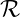,P,R,d0,γ)
where^6:
- t denotes the time step, where t > ℕ0
- S denotes the set of possible states an agent can be in, and s denotes
an individual state in the set S.
- A denotes the set of possible actions of an agent^7
- ⊆ ℝ denotes the set of possible rewards an agent can receive
- P : S× A× S → [0, 1] is the transition function
- R denotes the reward function
- d0 denotes the initial state distribution
- y ∈ [0, 1] denotes the reward discount factor
The elements of transition function P are called transition probabilties^7. The
transition probability Pi,j is the conditional probability of being in state sj at
time t + 1 given that we are in state si at time t [7]. The conditional
probability of Xn+1 given Xn (here we use the notation of a Markov chain, but
recall that the states S observe the Markov property and therefore form a
Markov chain) is the same for all t [7]. This property is known as time
homogeneity, and in general it is assumed that all Markov chains observe this
property^7.
To exemplify the use of an MDP, here is a well-known learning problem:
1.1.2 The Recycling Robot
A robot collects rubbish around an office. At any given time, the robot can either
(a) search for rubbish (b) wait or (c) return to it’s charging station. The robot is
either in a high state or low state, indicating its battery level. The reward it
receives is the number of items of rubbish it collects. The MDP can be
represented as the figure seen below:
On each transition, the label reads action(transition_probability,reward). A
search completed from the high state returns the robot to the high state with the
probability α and to the low state with probability 1 - α. A search from
the low state returns the robot to the low state with probability β and
depletes the battery with probability 1 - β. If the battery is depleted, the
robot must be manually returned to the charging point, thus the reward is
negative (here I have put -5 but the amount is not significant, just enough
so that the robot considers it worthwhile to avoid this outcome). For
the robot to operate effectively, we must have search > wait, else the
robot will simply do nothing. Formally, the MDP above can be considered
as:
- S = {high,low}
- A = {search,wait,recharge}
- = {search,wait, 0,-5}
And the transition function:
Most learning problems (although there are exceptions) can be modelled as
MDPs, including the game of Go. For problems with continous values, once they
are quantized again they can be represented as an MDP, or as a continuous
MDP.
1.2 Neural Networks
Neural Networks have gone in and out of fashion since their conception in 1943 by
McCullough and Pitts^8, enjoying a resurgence in the 1980s , in part due to
Werbos’ 1974 backpropagation algorithm^9, and once again falling back into
obscurity before an uptake in recent decades through the veil of ’deep
learning’.
Artificial Neural Networks (ANNs), usually shortened to Neural Networks (NNs)
are computational systems modelled after the animal brain. The field of NNs has
evolved independently many separate times in many different fields, so it remains
difficult to reach consensus on a canonical formalization. Haykin^10 offers the
following definition:
A neural network is a massively parallel distributed processor made up of
simple processing units that has a natural propensity for storing experiential
knowledge and making it available for use. It resembles the brain in two
respects:
- Knowledge is acquired by the network from its environment through
a learning process.
- Interneuron connection strengths, known as synaptic weights, are
used to store the acquired knowledge.
Note that this is a very high level interpretation of a neural network and we will
expand this definition later. This fits in line with our previous idea of the
neural network modelling itself after the brain. The simple processing units
mentioned in this definition are our ’neurons’, and their connections the
’synapses’. The purpose of modelling a brain, intuitively, is to be able
to emulate functions of the brain; namely problem-solving and pattern
recognition. Pattern recognition allows us to generalize - from data we have
seen to data we have not previously encountered. This is the primary
use of neural networks; to provide function approximations for complex,
intractable problems. We can start by formalizing the idea of the neuron:
The simplest and earliest model of a neuron is known as the McCulloch–Pitts
Model^8, definied in their 1943 paper. It consists of:
- A set of input synapses, each of which have a weight which signals the
importance of this synapse.
- A combiner function for summing these input signals.
- An activation function, which decides whether a neuron fires or not.
Figure 4 illustrates a basic neuron of a neural network. We can define our
combiner or aggregator function as :
Which simply sums the input signals multiplied by their weight. Notice that the
sum of the aggregator function iterates from 0 through n, however the input nodes
in Figure 4 range from 1 to n. This is to account for w0, the bias of our network
(the input x0 is fixed at 1). We can think of the bias as the c if we compare the
function of a neuron to the straight line equation y = mx + c. Our output yk is
defined as:
Simply our activation function applied to our input (from the aggregator
function).
There are many different activation functions. Referring back to our definition of a
neural network, we know that the purpose of NNs is to approximate functions,
which fundamentally come in two different formats; linear and non-linear. If we
have no activation function; that is, if the signal passes through neurons
unchanged, then the network effectively becomes a linear regression model, only
capable of solving linear equations. To solve any more complex problem, we need
to introduce non-linearity; an activation function. The type of activation function
we choose depends on the problem we are trying to model. Here are a few of the
most basic activation functions:
Threshold Function
A boolean function that distinguishes ranges of values above a certain
’threshold’^11. This satisfies the all -or -none property of neurons as describes in
McCulloch’s and Pitt’s paper^8; nerve cells will give the maximum response or
none at all. This could be used for yes-no type problems, although not multi-class
classification problems as by its very nature it can only distinguish between two
classes.
Sigmoid Function
Another commonly used activation function, otherwise known as the standard
logistic function in the field of ANNs^12; It provides a return value in the range 0
to 1, with larger inputs resulting in a value closer to 1, thus being a useful
activation function for problems requiring a probability as output. It is defined as
follows^12:
Where a is an optional slope parameter that dictates the gradient. Sometimes,
stochastic models of neurons can be useful:
Where T is a ’temperature’ that represents noise (randomness) in the
network^12,^10,^13. This noise level parameter is an emulation of the actual noise
that occurs in a biological neural network^13. This is where we depart from the
simple McCulloch–Pitts neuron model; Whilst the McCulloch–Pitts model was
deterministic in its output, for cases where we want to model partially random
behaviour, for example if we wanted to emulate human responses to some stimuli
like the Rubin’s vase^14. Admittedly the applications for stochastic neural nets are
few and far between.
Having covered the basic elements of a neuron, we can now discuss NN
architectures. While there are dozens of types of NN architectures, there are two
basic fundamental types.
1.2.1 Feedforward Networks
Feedforward networks were the first type of ANN, the simplest and earliest of
which was Rosenblatt’s Perceptron^15; a single neuron (of the McCulloch-Pitts
model) neural network with the aforementioned threshold function (more
specifically the Heaviside step function^16) as its activation function. Feedforward
networks are named as such because information in the input layer is ’fed forward’
through all the layers until reaching the output layer, without any loops or
feedback connections (i.e. outputs from neurons are not fed back into the neural
network). The simplest type of feedforward network has no hidden layers, and can
be seen below:
Single-Layered Networks as seen in Figure 5 consist of a single input layer and
a single output layer; it is considered single-layered as there is only a
single computational layer (no computation is performed in the input
layer). Data flows directly from the left to the right, ergo ’feedforward’.
Note here that since every neuron in the output layer is connected to every node
in the input layer, the network is said to be fully connected, or densely
connected^10. Similarly, if a layer is fully connected to the previous layer, this
is a fully connected layer. Fully connected layers are what we generally
see in neural networks, and they are for general purpose learning; no
neuron within a layer is differentiated from one another. As a consequence
however, the linear combination each neuron must perform of its inputs
is larger, and as such the computational requirements are heavier. The
inverse of this, namely partially connected layers, is generally only used in a
convolutional layer of a CNN (Convolutional Neural Network) as these partial
connections are particularly useful for feature recognition in image processing
tasks^17.
Certain problems may require multiple transformations of the data to reach a
desired output. Crudely speaking, hidden layers allow us to solve ’higher-order
statistical problems’^18.
With a single computational layer, we are only able to answer questions such as
’Does A correlate with B?’; that is, questions that can be solved with a single
non-linear function application. For questions of any more complexity than this,
such as ’How do A,B,C,D correlate?’, hidden layers give the network the ’global
perspective’ to be able to answer these^18.
To elucidate this matter further with an example; suppose that we want to
use a NN to calulate a logical XOR of our set of inputs, and allow that
activation functions in our network can only be simple logical operators.
Using simple operators, we cannot compute the XOR of a set of inputs in
a single layer, however if we allow for an additional hidden layer, this
computation becomes possible. Assuming an interpretation of XOR as below:
As opposed to the more standard two input version, see the figure below for a
neural net to compute this function:
Figure 6 shows us that adding a hidden layer enables us to transform our input in
a helpful way for our output; with OR and NAND as the activation functions of
the respective hidden layer neurons, our output layer is able to make use
of ’higher-order’ statistics that would not be available in a single-layer
network.
Whereas input and output layer neuron counts are easily determined; the number
of input nodes must match the shape of the data, and the number of output nodes
is determined by the answer desired, configuration of hidden layers is a highly
contentious subject with no academic consensus on any formal rules for
determining the parameters of hidden layers (such as number of nodes and
number of layers). However there are some general rules of thumb to go by: few
problems benefit from more than one hidden layer, and the number of
nodes is almost always between your input size and your output size^19.
This is further supported by the work of Cybenko^20 and Hornik^21, who
jointly proved the universal approximation theorem, which states that a
feed-forward neural network with a single hidden layer and a finite number of
neurons can approximate any continuous function (note however, that
this does not imply that it would be easy for the NN to actually learn
something). Techniques are available, namely Pruning algorithms, for optimizing
network structure, a in-depth survey of which can be found by Reed^22.
In light of these new concepts, we can now fully understand a more formal
definition of a neural network, one which is generally accepted in the
field and has been cited or paraphrased many times^23,^24,^25, and reads as
follows:
A neural network is a parallel, distributed information processing
structure consisting of processing elements (which can possess a local
memory and can carry out localized information processing operations)
interconnected together with unidirectional signal channels called
connections. Each processing element has a single output connection
which branches (”fans out”) into as many collateral connections as
desired (each carrying the same signal - the processing element output
signal). The processing element output signal can be of any mathematical
type desired. All of the processing that goes on within each processing
elemeni must be completely local: i.e., it must depend only upon the
current values of the input signals arriving at the processing element via
impinging connections and upon values stored in the processing element’s
local memory.
In this definition we can identify previously defined concepts such as activation
functions, fully or partially connected layers, weights and linear combinator
functions.
1.2.2 Backpropagation
Backpropagation, commonly credited to Rumelhart in 1986^26 although earlier
incarnations discovered independently by Bryson & Ho^27, Werbos^9 and
Parker^28 existed and were acknowledged, was a major stepping stone in the
development of the field. Research stagnated in 1969 after Minsky and
Papert^16 discovered two key problems with the NNs of the time; basic
perceptrons were not able to process XOR circuits (as illustrated above
in Figure 6), and computational requirements of larger neural nets far
exceeded the capabilities of contemporary machines. Backpropagation was
the fix enabling practical multilayered networks, which were the turning
point in NN research enabling the learning of complex multidimensional
mappings - hence Werbos’s description of backpropagation as going ‘Beyond
Regression’^9. Whilst initially developed as a supervised learning technique,
backpropagation has become the workhorse of reinforcement learning too, as
the same principle applies to learning reward functions and calculating
error.
In essence, backpropagation minimizes the error function for a given network by
gradient descent.
In the context of supervised learning; let fθ(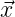) be the output calculated by a
given ANN, where θ is the set of parameters for the network (parameters being
the weights and biases of the individual nodes within the network). The error
function can be defined as some E(X,θ) where X = {(1,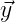1),…, (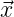n,n)} is the
set of input-output pairs of the network (i.e. expected output from a given input),
such that E(X,θ) is small when fθ( i) ≈ yi^24. A typically used error
function is mean-squared error or MSE, which can be defined as follows^29:
i) ≈ yi^24. A typically used error
function is mean-squared error or MSE, which can be defined as follows^29:
Or in English; the mean of the sum of squares of all the errors, where error is
the difference between the expected value of the network and the actual
value.
The intuition behind backpropagation is that we want to minimize the error
function (also known as the cost function) by nudging the values of the weights
and biases of the network in the direction that most efficiently minimizes the error
function. This can loosely be analogized to Hebbian theory^30, which is often
summed up as ’Neurons that fire together, wire together‘^31; we want to connect
more strongly those processing units (neurons) that fire when receiving an
input to those that should fire on the expected output for that input.
Note : The derivation of the backpropagation algorithm on the following pages has
been done with reference to papers by Hecht-Nielsen^24, Rumelhart, David
E and Durbin, Richard and Golden, Richard and Chauvin, Yves^32 and
Rumelhart, David E and Hinton, Geoffrey E and Williams, Ronald J^26.
More formally and with reference to Figure 8, We denote the layers of the hidden
network L where Lk is the output layer of the network, and denote the
weight of node j in layer Lk for incoming node i in layer Lk-1 as wijk.
Assume some squashing sigmoid function σ as our activation function, and
assume a single-output neural network for the purposes of this proof.
The output aik for node i in layer L
k is defined as:
Or in English; the sum of the weights multiplied by the activations of the
incoming nodes from the previous layer (nk-1 represents the number of nodes in
layer Lk-1), all squashed by σ. It will be helpful to denote the weighted sum that
σ is applied to as zik. Note that the bias in this case for a
ik is the special weight
w0ik, and a
0k-1 = 1. Recall the previous definition of the error function E as the
MSE (see Figure 7), and recall that that the purpose of backpropagation is to
minimize E. This is done by solving the derivative 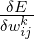 for all wijk, or more
formally:
Since the derivative of a sum of functions is the sum of the derivative of each
function (Sum rule), and the error function E(X,θ) is a sum itself, we can explain
backpropagation with respect to one error term (i.e. one input-output pair) and
combine them after the fact. Thus we will look at E = (y - fθ( ))2 as our error
function, omitting subscript d for simplicity. According to the chain rule :
))2 as our error
function, omitting subscript d for simplicity. According to the chain rule :
Note that E = (y - fθ( ))2 is equivalent to E = (y - a
1m)2 where m is our final
layer, as we have a single output node. Denote 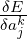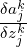 as the error term δjk. For
the rightmost term of the above function, only one term in the sum zjk depends
on wijk, so we have:
))2 is equivalent to E = (y - a
1m)2 where m is our final
layer, as we have a single output node. Denote 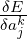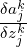 as the error term δjk. For
the rightmost term of the above function, only one term in the sum zjk depends
on wijk, so we have:
And thus:
Thus the partial derivative of the error function for a single input-output pair
with respect to weight wijk is a product of the error term at node j in layer L
k
and the output aik-1 of node i in layer L
k-1. Inuitively, we can understand
this as the amount to which the change in weight wijk influenced the
error function depends on the strength of the neuron i in layer Lk-1.
The error term δjk must be calculated with respect to a specific error function
(i.e. we cannot make this derivation general for all error functions), and since we
are using mean-squared error:
Where m is the final layer of the network. Backpropagation starts by defining δ1m
and ’propogating’ the error backwards through the hidden layer, thus we must
start on the output layer Lm (which as previously mentioned has one node for
the purposes of derivation). Thus our error term for the output layer is:
And putting it all together for the derivative of the error function with respect to
the final weight wi1m:
That is, the degree to which the error function E changes with respect to the final
weight depends on the change in the error in the final error multiplied by the
strength of the previous neuron.
Now we have the case for the error function derivatives for the hidden
layers. The error term δjk for the hidden layers 1 < k < m is defined as:
That is, the error term for a node j in layer Lk is the sum of the rate of
changes of all the error terms in the next layer k + 1 with respect to
itself. Note that the bias a0k and its corresponding weight w
0k+1j is not
dependent on the changes of the nodes in the previous layer, and so is
not included in this sum. Using our original definition of zjk, we have:
Plugging all of the above into our equation for δjk yields:
Finally, rearranging σ′(zjk) out of the sum since it does not depend on the
iterator, we get a final derivative for the error function with respect to a weight in
the hidden layers as :
And so, the change to an individual weight in the network is calculated as:
This is the ’gradient descent’ aspect of backpropagation; we want to change our
parameters θ (of which wijk is a member of) in our neural network f
θ( ) such
that we ’walk down’ (descend in the negative direction, hence the ’-’) the
gradient of our error function to find some local minima, so that our network
minimizes error. The rate at which we change a weight in our parameters θ
depends on how much that weight affects our error function, and the learning rate
α. The learning rate is a hyperparameter of the network that affects the rate of
adjustment of weights.
) such
that we ’walk down’ (descend in the negative direction, hence the ’-’) the
gradient of our error function to find some local minima, so that our network
minimizes error. The rate at which we change a weight in our parameters θ
depends on how much that weight affects our error function, and the learning rate
α. The learning rate is a hyperparameter of the network that affects the rate of
adjustment of weights.
So, assuming some learning rate α, and the weights of the networks randomly
initialized, our general backpropagation algorithm is as follows:
- Process all the input-output pairs in X with the neural network.
- Evaluate the error term for the output layer using Equation 3.
- Propagate the error backwards for layers m - 1 through 0 using
Equation 4.
- Evaluate the respective partial derivatives using Equation 2.
- Combine the derivatives in Equation 1.
- Iterate through all the weights in the network, adjusting them using
Equation 5.
1.2.3 Recurrent Networks
Recurrent Neural Networks distinguish themselves from Feedforward networks in
that they contain at least one feedback loop^10. A feedback loop implies
that output from neurons is fed back into the network in some form or
another (either to another neuron, or to itself, which is referred to as
self-feedback^10), resulting in a form of memory within the network. To
clarify, whilst all neural networks have memory, RNNs have sequential
memory in that they can relate information from a previous input within the
same training example to a current input. This is different from a FNN
(Feedforward NN) that can have ’inter-data’ memory as opposed to the RNNs
’intra-data’ memory. Memorization in a FNN is equivalent to overfitting. There
are many RNN variants, but the most general type would be the Fully
Recurrent network (FRNN). An FRNN is one where every unit is connected to
every other unit in the network^33. A typical example can be seen below:
Note that the time steps t must be discretized, with the activations updated at
each time step, and a delay unit is needed to hold activations for one time step^34.
From Figure 14, x(t) is our network input from some sequence at time t and h(t)
is our output. This section was mainly included to give context to the different
types of network architectures as it is not directly relevant to the learning
methods we will be using.
1.3 Policy Iteration
To talk about the subsequent learning methods, we must first introduce a concept
from Dynamic Programming (DP) known as policy iteration^35.
Policy Iteration, in the more general form General Policy Iteration (GPI)^36,
consists of two interacting, alternating processes; those of policy evaluation and
policy improvement. Policy evaluation is the process of making the value function
consistent with the current policy; that is, finding the total expected
reward for a policy π^37. Policy Improvement is the act of making the policy
greedy with respect to the current value function; that is, choosing a new
action that yields the highest reward given the current value function. This
is summed up with Policy Improvement Theorem, which states^2,^38,^39:
What this says in essence is that if we have a policy π′ that chooses greedily
among the options, and thereafter follows π, then this policy is universally better
than π. A formal proof can be found in Sutton’s book^38 and Precup, Sutton and
Singh’s paper^39.
Alternation between improvement and evaluation continues, in some form or
another (in policy iteration it is alternating, in asynchronous DP-like methods^40
they are interleaved at a finer grain) until the algorithm converges to the optimal
policy, and correspondingly an optimal value function.
1.4 Monte Carlo Method
The Monte Carlo method is a numerical method of solving problems by
simulation of random variables^41. Whilst it is vaguely defined, a generally
accepted conception date for the Monte Carlo method is 1949 when it was first
published in the American Statistical Association^42. The general principle of
Monte Carlo Methods can be summed up in the famous Hit-or-Miss example^41,^43:
If we want to estimate the size of some arbitrary shape S within some unit square
(see Figure 15), we can use Monte Carlo to estimate this value. Let N be a
random number of points within the square (red and blue dots), and N′ be the
number that fall within our shape S (blue dots only). It is clear then that the area
of S is approximately the same as the ratio N′∕N. This is the essence of Monte
Carlo methods; using random variables to estimate solutions to deterministic
problems.
In the context of reinforcement learning, recall that we are trying to solve the
Bellman equation, which in its simplest, unexpanded form looks like:
Which in essence says; the value of state s given policy π is the reward of the
current state plus the the discounted reward of the next state having followed
policy π. Now, since this is a recursive function, it is not immediately obvious how
to compute the policy π - how can we find the value of the current state when it
relies on the value of the future states? This leads us to our first issue of the credit
assignment problem.
The credit assignment problem^2,^44 is the problem of properly assigning values to
individual states in a learning episode which lead to a particular outcome.
Imagine we have a sequence of actions that lead to a particular positive outcome
for an agent. Early actions may be essential for this positive outcome to occur, yet
may not have an immediate reward themselves. Conversely, we may at some point
enter a ’doomed’ state, from which there is no possible positive outcome for our
agent. It would be wrong to assign credit for this to the states immediately
preceding this outcome, we must propogate these values all the way up to the
point in which we enter this ’doomed’ scenario. This is the essence of the credit
assignment problem. Monte Carlo methods provide one solution to this
problem. To be clear, this is a form of model-free learning^45, where the
transition probabilities of our MDP are unknown, in contrast to model-based
learning (with DP techniques such as Policy/Value Iteration). Note that the
algorithms we will be looking at later such as AlphaGo and MuZero do in
fact begin with an unknown transition matrix, however the first step of
learning for these algorithms is to build a model of their environment.
In contrast to basic TD-learning (not TD(λ) as this is a compromise between
Monte Carlo and regular TD-learning) covered in the next section, Monte-Carlo
methods do not bootstrap. Bootstrapping is when a learning algorithm
updates its current estimates of value within an episode based on previous
estimates (online)^46, in constrast to updating values at the end of an episode
(episode-by-episode).
When a model of the environment is known; that is, the agent knows which states
will result in which actions, then the state-value function is sufficient to calculate
optimal policy. However, in a model-free learning approach, where next states are
unknown, it is necessary to assign values to actions themselves, thus we must used
the Q-value function^47:
Which reads - The value of the state-action pair (s,a) is the value of taking
action a in the current state s and thereafter following policy π. As is the
case for all learning methods, the aim is to find the optimal policy, thus
we will be following a policy iteration protocol as described in Section
1.3 .
The essence of Monte-Carlo policy iteration is to generate N number of random
episodes (or runs through from an initial state to a terminal state), where
the higher N is the more accurate the estimate of the Q-value will be,
and average over these runs to generate estimates for state-action pairs.
There are two types of Monte-Carlo protocol for policy iteration; first-visit
and every-visit^48. First-visit protocols only average the values of the first
appearance of a state in an episode, whereas every-visit averages over all
appearances of a state. There are advantages and disadvantages to both, but for
simplicity we will go through first-visit protocols. Note that both protocols
eventually converge to the true value of the Q-function as N tends to
infinity.
An obvious problem of the Monte-Carlo protocol is, by the very nature of random
sampling, it is possible that in a large state space, many state-action pairs will
never be visited in the sampling stage, thus no Q-values for these pairs. A solution
to this is the assumption of stochastic policies, where the action in each state is
chosen by a dice roll, and we refine our probabilities assigned to each action
according to the Q function.
For our Monte Carlo policy iteration approach, we can either choose on-policy or
off-policy methods. An on-policy method updates Q-values based on the next
state s′ and the on-policy action a′′, whereas off-policy methods update the
Q-value based on the next state s′ and the greedy action a′^36. Thus the
distinction between on-policy and off-policy only exists if the current policy is not
greedy; that is, if the agent explores. However, an agent would never learn
anything about the environment if it did not explore, so this is rarely the case. A
non-greedy policy where π(a|s) > 0,∀s ∈ S,∀a ∈ A(s) can also be called a soft
policy, and the aim of policy iteration is to gradually shift this towards a
deterministic policy as the optimal policy is approached. A typical soft policy
used, such as for Q-learning^47 and Deep Q-learning^49,^50 is an ϵ-greedy policy,
where in each state, the agent chooses the greedy action, but with a chance 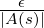
of choosing a random action.
Without going into detail, an on-policy Monte-Carlo method would repeatedly
evaluate the Q-value following a policy π using random sampling of episodes, and
then improving policy by moving towards a policy π that is greedy with respect to
the current Q-value function. An off-policy Monte Carlo method on the other
hand would follow an exploratory behaviour policy b whilst using policy iteration
to improve a target policy π, and estimating the distribution of π from b using a
technique called importance sampling^36,^51.
1.5 Temporal Difference Learning
Temporal difference (TD) learning as described by Sutton^52, is learning to
predict, where learning is driven by difference in predictions over time. It is
a model-free RL approach, where the agent has no prior knowledge of
the environment^52. To use his weatherman example, if we are to predict
rain on Saturday, and we are given a 50% chance prediction on Monday,
and 75% on Tuesday, TD learning methods will increase predictions for
days similar to Monday. This is also done as soon as Tuesday is reached,
without waiting for Saturday to actually arrive, and is therefore a form of
bootstrapping^52. TD learning excells at a specific kind of specific kind of
prediction problem; a multi-step prediction problem. To clarify, a single-step
prediction problem is one where all information about the correctness of each
prediction is revealed at once, in contrast to multi-step where correctness
is not revealed until one or more steps after the prediction is made^52.
As mentioned in Section 1.4, TD methods use bootstrapping to update their
estimates in real-time (online) during the course of an episode. Again
TD methods use a policy iteration protocol, but because they bootstrap,
whereas MC methods wait until the end of an episode to update their
estimates, TD methods can immediately update an estimate after a single
timestep. The simplest form of TD called TD(0) performs updates like so^52:
Or in the case of the Q-value function:
Where α is our learning rate. The learning rate here is used similarly to the
learning rate of backpropagation (see Section 1.2.2), where we can tune this to
adjust our rate of change. The equation above is essentially saying ’The new value
of state St is the old value plus the difference in value between the new state and
the old state, adjusted by a learning rate α’. To illustrate the difference
between this and Monte-Carlo methods, an equivalent update rule would be:
Where Gt is our cumulative discounted reward after time t, which must be
calculated at the end of a full episode as opposed to TD(0)’s single timestep. As
a result, in TD updates, the real value of V (St) is unknown, as is the
case for MC methods, and so a sample return is used for an estimate,
however in addition to this it estimates V (St+1) as well (in contast to
MC methods which would wait until the sample return Gt is known).
Intuitively, TD methods provide some obvious advantages over MC methods.
Firstly, in scenarios where episodes are long, it would be advantageous to begin
learning without having to wait for an episode to finish. As an extension of this,
learning problems that are continuous in nature and not episodic are in fact forced
to used TD methods; MC methods would not work at all in this scenario as the
true sampled return of an episode is never reached. Moreover, convergence of TD
methods with regards to general linear function approximation (meaning the
approximation of a general function by a linear function, for example
the weights and biases in the case of a NN) has been proven^53,^54, so it
seems at first glance that TD methods are universally better. This leads
us neatly to a central problem of machine learning; the bias-variance
tradeoff.
1.5.1 Bias-Variance Tradeoff
The bias-variance tradeoff found in a 1992 paper by Geman et al.^55, is a conflict
between two source of error that cause issues with learning methods generalizing
beyond their training set. Although initially conceptualized for neural networks,
the same principle applies here in our comparison of MC and TD methods.
Loosely speaking, bias in this context is the difference between the current
estimate of q(s,a) (or v(s)) and the true value, whereas variance is the difference
in our predictions of q(s,a) (or v(s)) between data points. Bias is a case of
oversimplification and as such ’underfitting’, whereas variance is a case of
’overfitting’. It is said that Monte-Carlo methods suffer from high variance, and
TD methods suffer from high bias. To see why, we must look at the updates each
method performs to the value functions. Recall the update rule for MC:
Here the update is performed with Gt, which is the actual sampled return
for a sequence from time t. cumulative reward from time t is therefore:
Where T is our final timestep. Recall our Q-value function:
Which can be rewritten in a non-recursive form as:
It is clear to see that MC updates will have no bias as they are the true sample
return. TD methods on the other hand bootstrap, and as such they will be
biased on whatever the initial value of γQ(St+1,At+1) is set to. This of
course will converge with experience, as the true Q-value is approached,
however. Note that whilst convergence works for tabular methods, once
function approximators (read; neural networks) and off-policy learning
are introduced, instability and divergence can occur. Full details of the
deadly triad can be found in Sutton and Barto^56 and Hasselt et al.^57
Variance is harder to pinpoint, however the intuition is this; A TD update relies
on 3 random variables - The next reward, the next state and the next action. MC
methods on the other hand, rely on the sum of every reward, action and state for
the entire trajectory of an episode. This introduces many more random variables
than the TD update, and as such, the variance is much higher. Whilst
bias-variance is always a tradeoff, there are methods which attempt to
compromise a middle ground, which leads us to TD(λ).
1.5.2 TD(λ)
Famously TD learning was used in a game-learning program called
TD-Gammon^58, which uses the variation TD(λ). In contrast to games like chess
and checkers where brute-force deep searches for move discovery worked,
backgammon was one of the first games RL conquered where brute force methods
would not work. This is due to the high branching factor; each play in
backgammon involves dice rolls, with an average of 20 legal moves per
dice roll. This results in a branching factor of several hundred. Thus new
methods needed to be developed to solve this game, namely some form
of heuristic judgement. Previous approaches to this problem involved
designing a heuristic evaluation function based off of the knowledge of human
experts^59, however this has never been terribly successful due to the difficulty
of encapsulating the human reasoning process within a heuristic, likely
due to the unknowable factor of human intuition. TD-Gammon tries a
radically different approach at the time, which is learning through self-play^58.
To discuss TD(λ) we must first introduce the concept of eligibility traces.
Eligibility traces are essentially a way to compromise TD(0) and Monte Carlo
methods, where instead of looking ahead one step (TD(0)) or waiting until the
end of an episode (Monte Carlo), we instead introduce a weight λ for an n-step
lookahead. n-step lookahead can be thought of as an extension to TD(0).
Recall the update to the value of a state in TD(0) was performed as:
And the update for Monte Carlo:
Where Gt as we know is the full expected return of an episode:
The update Rt+1 + γV (St+1) in TD(0) can be thought of as Gt:t+1. Naturally,
then, the update for an n-step return Gt:t+n would be:
What TD(λ) does^60,^52, is take an average over all n-step updates (that is, the
average of Gt:t+1,Gt:t+2…Gt:t+n), where each subsequent time step return is
weighted in a decaying fashion. The eligibility trace itself is a mechanism to
perform online learning via a short-term memory vector (short term in the sense
that it lasts less than the length of an episode, compared to the long-term weight
vector of the function approximator which accumulates over the lifetime of the
agent) that parallels the weight vector of some function approximator like a neural
network, with the primary advantage of (apart from online learning) reducing
the memory space of a learning function by storing a single trace vector
compared to having to store the entire history of vectors for an episode and
performing the update then. Since we want the weights to sum to one
to produce a weighted average, we must normalize the weights. If we
consider the weight λn for the nth step return, then our weighted sum is :
By the sum of an infinite geometric series. Therefore to normalize the sum to 1,
we multiply by (1 - λ). Thus the TD(λ) update as presented by Sutton^60 is
defined as:
Which reads; the return at time t with respect to λ is the normalized sum of all
n-step returns after timestep t. All n-step returns exceeding some terminal state
are equivalent to the expected Gt return. To make clear that TD(λ) is a
compromise between MC methods and TD(0) depending on λ, we can separate
the sum out:
 |
(1)
(2)
(3)
|
Which makes clearer the effect of λ. If λ goes to 1, the first sum goes to
0, and the return is just Gt, making it a MC method. If λ goes to 0, the return is
simply Gt:t+1 (accepting the convention that 00 = 1 for λ0G
t:t+1), and this is just
TD(0). Thus adjusting the λ value allows us to find some comprimise
between the two ends of the spectrum, depending on the problem we face.
Notice that this (along with all the other learning methods we have previously
looked at) is what’s known as a forward view, where we perform an update to
a state based on the values of the states that succeed it. Whilst this is
useful in theory, in practice it is hard for us to know the value of future
states (without performing some initial sampling such as in MC methods).
Arguably a more useful approach would be the backwards view, where an
agent looks backwards in time to discover what led him to this point.
Without going into detail, the eligiblity trace in essence keeps track of which
weights in the neural network have contributed towards a given state valuation,
and is used to update weights in subsequent iterations^60. It updates weights when
the value prediction changes, proportional to the amount they contributed to that
valuation; it checks the ’eligibility’ of each weight to be updated. This is a
backwards view of learning; updating weights in the function approximator with
regards to their past inputs to state (or action, although in the case of
basic TD methods such as these it is concerned with state) valuations.
In the case of TD-Gammon, the version of TD in play is known as semi-gradient
TD(λ) (semi-gradient in the sense that we are not finding the true gradient of a
function with a function approximator, we are approximating it, with respect to
some weight vector). Updates are performed as^60:
Where 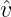 (St,w) is our approximation of the value function (i.e. the output of the
function approximator) with respect to some weight vector w, α is our learning
rate, γ is the discount factor and zt is our eligiblity trace vector. An equivalent
update function is given in the TD-Gammon paper^58. At each moment in time,
we are finding the error - a one step TD update (in the square brackets
above), and combining it with the eligiblity trace, to produce a new weight
vector which adjusts each weight within it according to how much each
of these weights contributed to the previous valuation. We can see the
function of the eligiblity trace as tracking which weights contributed in what
proportion to the valuation by examining the above update to the eligiblity
trace vector, seen in the round brackets; the eligiblity trace is adjusted
by the gradient of the valuation function with respect to each weight.
We can also see the impact of our decay parameter λ. If λ = 0, the eligiblity trace
in the function above at time t is equivalent to the value gradient at time t. This
is efficively TD(0), where only the previous state is updated by the error. If λ < 1,
states in the past will be updated (in effect, by adjusting the weight vector
parameter according to the decayed impact of these valuations), but each more
distant state is updated less and less. Earlier states receive less credit for the
current error. If λ = 1, then previous states only decay by γ, which is in fact just
Monte Carlo behaviour.
TD-Gammon performed very well for the time, outperforming or matching many
of the contemporary world champions^58 (additionally outperforming Tesauro’s
previous supervised learning approach to backgammon - Neurogammon^61),
however it was noted that from a zero-knowledge starting point and a raw board
encoding, the optimally trained and sized network only learnt to play at a strong
intermediate level, and required hand-coding of more advanced rules to be able to
play at the highest level. Furthermore, as noted by Tesauro himself^58, games
more complex than backgammon such as Chess and Go, would require
more than just linear function approximation of raw board variables. He
suggests finding improved board representations, however as discussed in
the later sections, solutions like AlphaGo and MuZero purely used raw
board encoding as input^62,^63, choosing to increase algorithmic complexity
instead.
1.6 Q-Learning
Q-Learning as defined by Watkins^47, is a form of off-policy, model-free RL for
Markovian domains as described in Section 1.1.1. It is also known as off-policy TD
control, and the update is performed as follows^:
This is clearly a TD method as it bootstraps itself with the previous Q-value, and
updates policy with the return of the next state and the next greedy action
(max a), thus it is off-policy; the greedy action is chosen irrespective of the policy
followed.
Q-learning has been shown to suffer from overestimation, or maximization bias^64,
which is a systematic overestimation of Q-values which generally only arises with
the use of function approximators. This is an example of the deadly triad we
referred to earlier. Q-learning was shown to converge^47, however this only
occurs for the tabular method (i.e Q-values stored in lookup tables). When
Q-learning; an off-policy, bootstrapping method, is combined with function
approximation, instability occurs. Namely, through the mechanism of
function approximation, noise is introduced into our Q-values, and this noise
corrupts our estimates to the extent that they suffer from positive bias^64,^46.
Amongst a variety of solutions such as Bias-corrected Q-learning^65, MaxMin
Learning^66, a prominant proposal is known as Double Q-learning. In
essence, the overestimation problem occurs because we are using a max
operator over a set of estimates of Q-values, where these estimates are
biased. As such, we pick new values based off of biased estimates and our
new value is in turn biased. To counter this, we can use two independent
Q estimators for each state-action pair, thus reducing the variance of
our estimates via cross-validation. We have two Q estimators Q1 and Q2
(or QA and QB in some of the literature), and on each timestep of the
algorithm, we choose one at random to update. An update looks like^67,^46:
And vice versa for Q2. This elmininates the overestimation bias found in regular
Q-learning^67,^46, however introduces a new problem of underestimation; Double
Q-learning has been shown to have multiple suboptimal fixed points^68, which
raises the concern that it may get stuck in local regions and struggle to find the
optimal policy.
Overestimation and underestimation are not always detrimental to learning, it is
highly dependent on the environment. Lan et al.^66 show that for cases
where our environment has highly stochastic action spaces, this is where
overestimation is most likely to occur. And in situations where highly
stochastic regions correspond to high-value regions, then overestimation
encourages exploration in this region, and lead the agent to explore the
region further. Conversely, underestimation reduces this exploration. In
situations where highly stochastic regions have high value, overestimation
may lead to higher rewards, and in situations where they are low-value,
underestimation reduces wasted time and overexploration. Both can lead to
optimal policy in the correct environment, and fail to find it in a mismatched
environment.
1.7 Key Algorithms
Having covered the fundamentals of reinforcement learning, and the various
approaches to learning, this section now begins to outline more modern
algorithms, which progressively approach our solution needed for the game of Go
in the subsequent subsections.
1.7.1 DQN
DQNs or Deep Q-Networks as studied by Mnih et al. in 2015^49,^50, are essentially
convolutional neural networks trained with a variant of Q-learning, whose input is
a set of raw pixels and whose output is a value function. In the paper (and in
general), the term ’pixel’ implies the physical individual images of an image,
where in the case of this paper the images are of Atari games the network is
training to play. However, a ’pixel’ in terms of an input to a convolutional
network are not limited to image pixels, as is the case in the Alpha family
of algorithms^63,^69,^62, where a pixel represents a board position of the
game.
1.7.2 Convolutional Neural Networks (CNNs)
As alluded to above, the general role of CNNs is to efficiently use regular
multilayer perceptrons (described in Section 1.2.1) on large inputs, generally 2D
shapes (as is the case for image-recognition which is the most common application
of CNNs, or the board state in Go), however can be extended to higher
dimensional spaces as shown by Choy et al.^70 Note that the common approach for
higher dimensional images (such as 3D models) is to use a pooling layer, which is
discussed shortly. Consider the case for a 1920x1080 image. This would be an
input vector with over 2 million elements; a huge computational cost to a fully
connected multilayer network. As such, the distinct feature and use of a CNN is
the initial ’convolutional’ layers prepended to the network, which extract the
useful features from the large input space and ’convolve’ them. CNNs were
inspired by and can be likened to the function of neurons in the visual
cortex; neurons ’convolve’ and subsample the visual stream from the eye
and reduce to (in the mind of the observer) feature maps which enable
us to extract the most important information from what we perceive^71.
Each neuron in a layer has a receptive field in the previous layer^10. This receptive
field is a restricted area of the previous layer. For example, in a 30x30
image, the first input layer may have neurons with a receptive field of
5x5. This enables us to preserve locality of feature maps in subsequent
layers. This locality is important in areas such as edge detection (where
locality is critical to the discovery of edges), but more importantly in the
domain of Go, allows us to take advantage of the essential locality of
Go^72; the ’liberties’ around points on the board must be considered in the
context of their adjacency for the analysis to have any meaning at all.
A convolutional layer consists of neurons that convolve their respective receptive
fields with a given kernel to produce a feature map. Consider a 27x27 input
image, and a single filter (that is, a single kernel used to detect a single type of
feature from the image - like edges; this would really be a waste of a CNN as you
generally want to detect more than one type of feature, but for simplicity’s sake)
of size 3x3. Then assuming no overlap, and a receptive field size of 3x3, then the
number of neurons in the convolutional layer would be 81 (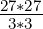). These 81
neurons encode the feature map extracted from the image, and this group of
neurons is constrained to share the same set of synaptic weights^10, further
reducing the computational footprint when contrasted with a regular
multilayer perceptron. This weight-sharing structure happens to match the
structure of Go excellently^72, as the rules of the game are translationally
invariant; that is, regardless of the receptive field captured on the board,
the same rules apply. Compare this to Chess or Shogi, where rules are
positionally-dependent (e.g. pawns moving 2 squares on the second rank and 1
square thereafter) and assymmetric (e.g. castling), thus not taking advantages of
the properties of the CNN^72. Interesting to note as well is that locality is not
preserved in either of these games; pieces may make long-distance moves.
Following a convolutional layer you would typically have a pooling layer^10, which
subsample the feature maps produced from the previous layer and further reduce
the size via Max Pooling^73 (retains the most prominent features of the feature
map) or Average Pooling (retains the average values of features of the feature
map). These are two of the most common pooling techniques; there are many
more, with different techniques best suited to different domains. With deep
networks, there may be multiple layers of convolution and pooling. Like the use of
deep networks to learn ’higher-order’ statistics mentioned in Section 1.2.1, Deep
CNNs have the ability to learn more general patterns in input. For example, the
first layer may learn edges, a second may learn eyes, the third may learn noses etc.
The final layer results in a ’global’ perspective, i.e. facial recognition. As each
convolutional layer typically has multiple filters, higher dimensional but smaller
resolution layers are produced (e.g. starting with a 27x27 image, with
3 filters, we have 3x(9x9) in the next layer; 81 * 3 = 243 neurons). As
such, the output of the final pooling layer will have a small resolution
and a high dimensionality. This shape is then fed into a regular fully
connected multilayer network, and proceeds as described in Section 1.2.1.
There are many other subtleties of CNNs, however this covers the basic outline of
the process. Returning to DQNs, in the seminal study conducted by Mnih et
al.^50,^49 the learning task consisted of a set of Atari 2600 games. The CNN
architecture was as follows; an 84x84x4 input layer consisting of the raw pixel
input from the Atari 2600 emulator, the first convolutional layer convolves 16 8x8
filters with a ReLU activation function (a common function used in recent years
for deep learning), second convolutional layer consisting of 32 4x4 filters, followed
by 2 fully connected layers whose output is a probability output for each valid
action. This architecture lacks pooling layers, which is likely due to the small
input space.
This learning architecture consists of off-policy, bootstrapping and function
approximation, and as a result suffers from the instabiity and divergence of the
deadly triad mentioned earlier. To rectify this, experience replay was
employed^49. This is the variant of Q-learning previous mentioned; rather than
evaluating the Q-value function based on state-action pairs as is conventionally
done, a data set of previous experience of the agent in the environment is
stored. Q-value updates are then performed using a random uniformm
sample of this data set. Advantages of this approach include more efficient
use of previous experience, which can be a benefit in an environment
such as these Atari games where experience is costly (i.e. time cost due
to the games being configured for a human-level speed of input), and
primarily has been shown to outperform Q-learning in most cases in terms of
convergence time^74. Preliminary, non peer-reviewed (as of time of writing)
proof has been published by Szlak et al.^75 to demonstrate theoretical
convergence of Q-learning with Experience Replay, with experimental evidence
supporting.
1.7.3 DDQN
1.7.4 AlphaZero
1.7.5 MuZero
2 The Game
2.1 Common Fate Graph (CFG)
3 The Analysis Engine
3.1 Supervised Learning
4 The Website
4.0.1 The Pole-Balancing Problem
The pole-balancing problem as explored by Michie^76 and Barto, Sutton
and Anderson^77, is a benchmark problem of control systems theory and
procedural learning. As the name suggests, the skill the agent must aquire
is to balance a pole. See below for an illustration of the environment:
The cart is free to move along the track between the two endstops (shown with
arrows on Figure 16), and the pole is attached to the cart with a hinge, and is free
to move in the direction shown above the pole in Figure 16. The two
control actions an agent can take are to push the cart in either the left
or right direction. The MDP modelling the above problem would be as
follows:
- S
- A is the set of actions LEFT,RIGHT indicating the direction to move
the cart
References
-
[1]
-
Richard S Sutton, ed. Reinforcement Learning. en. The Springer
International Series in Engineering and Computer Science. New York,
NY: Springer, Oct. 2012.
-
[2]
-
Christopher John Cornish Hellaby Watkins. “Learning from delayed
rewards”. In: (1989).
-
[3]
-
Richard Bellman. “A Markovian decision process”. In: Journal of
mathematics and mechanics 6.5 (1957), pp. 679–684.
-
[4]
-
S. Brooks et al. Handbook
of Markov Chain Monte Carlo. Chapman & Hall/CRC Handbooks of
Modern Statistical Methods. CRC Press, 2011. isbn: 9781420079425.
url: https://books.google.co.uk/books?id=qfRsAIKZ4rIC.
-
[5]
-
“The theory of stochastic processes: I. I. Gihman and A. V. Skorohod, I,
Springer, 1974, 570 pp”. eng. In: Advances in Mathematics 19.3 (1976),
pp. 419–419. issn: 0001-8708.
-
[6]
-
Philip S Thomas and Billy Okal. “A notation for Markov decision
processes”. In: arXiv preprint arXiv:1512.09075 (2015).
-
[7]
-
Olle Häggström et al. Finite Markov chains and algorithmic
applications. 52. Cambridge University Press, 2002.
-
[8]
-
Warren S McCulloch and Walter Pitts. “A logical calculus of the
ideas immanent in nervous activity”. In: The bulletin of mathematical
biophysics 5.4 (1943), pp. 115–133.
-
[9]
-
Paul Werbos. “Beyond regression:” new tools for prediction and
analysis in the behavioral sciences”. In: Ph. D. dissertation, Harvard
University (1974).
-
[10]
-
S. Haykin. Neural Networks and
Learning Machines, 3/e. PHI Learning, 2010. isbn: 9789332586253.
url: https://books.google.se/books?id=ivK0DwAAQBAJ.
-
[11]
-
Yadolah Dodge. The Oxford dictionary of statistical terms. Oxford New
York: Oxford University Press, 2003. isbn: 0-19-850994-4.
-
[12]
-
From Natural to Artificial Neural Computation : International
Workshop on Artificial Neural Networks, Malaga-Torremolinos, Spain,
June 7 – 9, 1995 Proceedings. eng. 1st ed. 1995. Lecture Notes in
Computer Science, 930. Berlin, Heidelberg: Springer Berlin Heidelberg
: Imprint: Springer, 1995. isbn: 3-540-49288-7.
-
[13]
-
J D Keeler, E E Pichler, and J Ross. “Noise in neural networks:
thresholds, hysteresis, and neuromodulation of signal-to-noise”. In:
Proceedings of the National Academy of Sciences 86.5 (1989),
pp. 1712–1716. issn: 0027-8424. doi: 10.1073/pnas.86.5.1712.
eprint: https://www.pnas.org/content/86/5/1712.full.pdf. url:
https://www.pnas.org/content/86/5/1712.
-
[14]
-
E. Rubin. Synsoplevede Figurer. v. 1. Gyldendal, 1915. url:
https://books.google.co.uk/books?id=1vGmnQAACAAJ.
-
[15]
-
Frank Rosenblatt. “The perceptron: a probabilistic model for
information storage and organization in the brain.” In: Psychological
review 65.6 (1958), p. 386.
-
[16]
-
Marvin Minsky, Seymour A. Papert, and Leon Bottou. “Introduction”.
In: Perceptrons: An Introduction to Computational Geometry. 2017,
pp. 1–20.
-
[17]
-
Saad Albawi, Tareq Abed Mohammed, and
Saad Al-Zawi. “Understanding of a convolutional neural network”. In:
2017 International Conference on Engineering and Technology (ICET).
2017, pp. 1–6. doi: 10.1109/ICEngTechnol.2017.8308186.
-
[18]
-
Patricia S Churchland and Terrence J Sejnowski. “Computational
Overview”. eng. In: The Computational Brain. The MIT Press, 2016.
isbn: 0262533391.
-
[19]
-
Warren Sarle. comp.ai.neural-nets FAQ. Tech. rep. SAS Institute Inc.,
Cary, NC, USA, 2002.
-
[20]
-
George Cybenko. “Approximations by superpositions of a sigmoidal
function”. In: Mathematics of Control, Signals and Systems 2 (1989),
pp. 183–192.
-
[21]
-
Kurt Hornik. “Approximation capabilities of multilayer feedforward
networks”. In: Neural networks 4.2 (1991), pp. 251–257.
-
[22]
-
R. Reed. “Pruning algorithms-a survey”. In: IEEE Transactions on
Neural Networks 4.5 (1993), pp. 740–747. doi: 10.1109/72.248452.
-
[23]
-
Patrick K Simpson. Artificial neural systems: foundations, paradigms,
applications, and implementations. McGraw-Hill, Inc., 1991.
-
[24]
-
Hecht-Nielsen. “Theory of the backpropagation neural network”.
In: International 1989 Joint Conference on Neural Networks. 1989,
593–605 vol.1. doi: 10.1109/IJCNN.1989.118638.
-
[25]
-
Jacek Zurada. Introduction to artificial neural systems. West
Publishing Co., 1992.
-
[26]
-
David E Rumelhart, Geoffrey E Hinton, and Ronald J Williams.
“Learning representations by back-propagating errors”. In: nature
323.6088 (1986), pp. 533–536.
-
[27]
-
Arthur E Bryson and Yu-Chi Ho. Applied optimal control: optimization,
estimation, and control. Routledge, 2018.
-
[28]
-
David B Parker. “Optimal algorithms for adaptive networks: Second
order backpropagation, second order direct backpropagation, and
second order hebbing learning”. In: IEEE International Joint
Conference on Neural Networks, 1987. 1987.
-
[29]
-
“Mean Squared Error”. In: Encyclopedia of Machine Learning. Ed. by
Claude Sammut
and Geoffrey I. Webb. Boston, MA: Springer US, 2010, pp. 653–653.
isbn: 978-0-387-30164-8. doi: 10.1007/978-0-387-30164-8_528.
url: https://doi.org/10.1007/978-0-387-30164-8_528.
-
[30]
-
G. L. Shaw. “Donald Hebb: The Organization of Behavior”. In:
Brain Theory. Ed. by Günther Palm and Ad Aertsen. Berlin,
Heidelberg: Springer Berlin Heidelberg, 1986, pp. 231–233. isbn:
978-3-642-70911-1.
-
[31]
-
Siegrid
Löwel and Wolf Singer. “Selection of Intrinsic Horizontal Connections
in the Visual Cortex by Correlated Neuronal Activity”. In: Science
255.5041 (1992), pp. 209–212. doi: 10.1126/science.1372754. eprint:
https://www.science.org/doi/pdf/10.1126/science.1372754.
url:
https://www.science.org/doi/abs/10.1126/science.1372754.
-
[32]
-
David E Rumelhart et al. “Backpropagation: The basic theory”.
In: Backpropagation: Theory, architectures and applications (1995),
pp. 1–34.
-
[33]
-
G. Kechriotis and E.S. Manolakos. “Training fully recurrent neural
networks with complex weights”. In: IEEE Transactions on Circuits
and Systems II: Analog and Digital Signal Processing 41.3 (1994),
pp. 235–238. doi: 10.1109/82.279210.
-
[34]
-
John A Bullinaria. “Recurrent neural networks”. In: Neural
Computation: Lecture 12 (2013).
-
[35]
-
Richard Bellman. Dynamic Programming. Dover Publications, 1957.
isbn: 9780486428093.
-
[36]
-
Richard S. Sutton and Andrew G. Barto. Reinforcement Learning: An
Introduction. Cambridge, MA, USA: A Bradford Book, 2018. Chap. 5.
isbn: 0262039249.
-
[37]
-
Martin L. Puterman. Markov decision processes: discrete stochastic
dynamic programming. 1st ed. Wiley series in probability and
mathematical statistics. John Wiley & Sons, 1994. isbn: 0471727822;
9780471727828.
-
[38]
-
Richard S. Sutton and Andrew G. Barto. Reinforcement Learning: An
Introduction. Cambridge, MA, USA: A Bradford Book, 2018. Chap. 4.
isbn: 0262039249.
-
[39]
-
Doina Precup, Richard S. Sutton, and Satinder Singh. “Theoretical
results on reinforcement learning with temporally abstract options”.
In: Machine Learning: ECML-98. Ed. by Claire Nédellec and Céline
Rouveirol. Berlin, Heidelberg: Springer Berlin Heidelberg, 1998,
pp. 382–393. isbn: 978-3-540-69781-7.
-
[40]
-
Andrew G Barto, Steven J Bradtke, and Satinder P Singh. “Learning
to act using real-time dynamic programming”. In: Artificial intelligence
72.1-2 (1995), pp. 81–138.
-
[41]
-
I. M. (Il’ia Meerovich) Sobol’. A primer for the Monte Carlo method.
eng. Boca Raton ; London: CRC, 1994. isbn: 9780849386732.
-
[42]
-
Nicholas
Metropolis and S. Ulam. “The Monte Carlo Method”. In: Journal of
the American Statistical Association 44.247 (1949), pp. 335–341. issn:
01621459. url: http://www.jstor.org/stable/2280232.
-
[43]
-
Christian P. Robert and George Casella. “Monte Carlo Integration”. In:
Monte Carlo Statistical Methods. New York, NY: Springer New York,
2004, pp. 79–122.
isbn: 978-1-4757-4145-2. doi: 10.1007/978-1-4757-4145-2_3. url:
https://doi.org/10.1007/978-1-4757-4145-2_3.
-
[44]
-
Richard Stuart Sutton. “Temporal credit assignment in reinforcement
learning”. PhD thesis. University of Massachusetts Amherst, 1984.
-
[45]
-
Richard S. Sutton and Andrew G. Barto. Reinforcement Learning: An
Introduction. Cambridge, MA, USA: A Bradford Book, 2018. Chap. 1.
isbn: 0262039249.
-
[46]
-
Richard S. Sutton and Andrew G. Barto. Reinforcement Learning: An
Introduction. Cambridge, MA, USA: A Bradford Book, 2018. Chap. 6.
isbn: 0262039249.
-
[47]
-
Christopher JCH Watkins and Peter Dayan. “Q-learning”. In: Machine
learning 8.3-4 (1992), pp. 279–292.
-
[48]
-
Christian Wirth and Johannes Fürnkranz. “EPMC: Every Visit
Preference Monte Carlo for Reinforcement Learning”. In: Proceedings
of the 5th Asian Conference on Machine Learning. Ed. by Cheng
Soon Ong and Tu Bao Ho. Vol. 29. Proceedings of Machine Learning
Research. Australian National
University, Canberra, Australia: PMLR, Nov. 2013, pp. 483–497. url:
https://proceedings.mlr.press/v29/Wirth13.html.
-
[49]
-
Volodymyr Mnih et al. “Human-level
control through deep reinforcement learning”. In: Nature 518.7540
(Feb. 2015), pp. 529–533. issn: 1476-4687. doi: 10.1038/nature14236.
url: https://doi.org/10.1038/nature14236.
-
[50]
-
Volodymyr Mnih et al. “Playing Atari with Deep Reinforcement
Learning”. In: CoRR abs/1312.5602 (2013). arXiv: 1312.5602. url:
http://arxiv.org/abs/1312.5602.
-
[51]
-
R.Y. Rubinstein and
D.P. Kroese. Simulation and the Monte Carlo Method. Wiley Series in
Probability and Statistics. Wiley, 2011. Chap. 5. isbn: 9781118210529.
url: https://books.google.co.uk/books?id=yWcvT80gQK4C.
-
[52]
-
Richard S Sutton. “Learning to predict by the methods of temporal
differences”. In: Machine learning 3.1 (1988), pp. 9–44.
-
[53]
-
Vladislav Tadić. “On the convergence of temporal-difference learning
with linear function approximation”. In: Machine learning 42.3 (2001),
pp. 241–267.
-
[54]
-
Richard S Sutton, Csaba Szepesvári, and Hamid Reza Maei.
“A convergent O (n) algorithm for off-policy temporal-difference
learning with linear function approximation”. In: Advances in neural
information processing systems 21.21 (2008), pp. 1609–1616.
-
[55]
-
Stuart Geman, Elie Bienenstock, and René Doursat. “Neural Networks
and the Bias/Variance Dilemma”. eng. In: Neural computation 4.1
(1992), pp. 1–58. issn: 1530-888X.
-
[56]
-
Richard S. Sutton and Andrew G. Barto. Reinforcement Learning: An
Introduction. Second. The MIT Press, 2018. url:
http://incompleteideas.net/book/the-book-2nd.html.
-
[57]
-
Hado van Hasselt et al. Deep Reinforcement Learning and the Deadly
Triad. 2018. arXiv: 1812.02648 [cs.AI].
-
[58]
-
Gerald Tesauro et al. “Temporal difference learning and TD-Gammon”.
In: Communications of the ACM 38.3 (1995), pp. 58–68.
-
[59]
-
Hans Berliner. “Computer backgammon”. In: Scientific American
242.6 (1980), pp. 64–73.
-
[60]
-
Richard S. Sutton and Andrew G. Barto. Reinforcement Learning: An
Introduction. Cambridge, MA, USA: A Bradford Book, 2018. Chap. 12.
isbn: 0262039249.
-
[61]
-
Hado van Hasselt et al. “Deep Reinforcement Learning and the Deadly
Triad”. In: CoRR abs/1812.02648 (2018). arXiv: 1812.02648. url:
http://arxiv.org/abs/1812.02648.
-
[62]
-
Julian Schrittwieser et al. “Mastering Atari, Go, Chess and Shogi by
Planning with a Learned Model”. In: CoRR abs/1911.08265 (2019).
arXiv: 1911.08265. url: http://arxiv.org/abs/1911.08265.
-
[63]
-
David Silver et al. “Mastering
the game of Go without human knowledge”. In: Nature 550.7676 (Oct.
2017), pp. 354–359. issn: 1476-4687. doi: 10.1038/nature24270. url:
https://doi.org/10.1038/nature24270.
-
[64]
-
Sebastian Thrun and Anton Schwartz. “Issues in using function
approximation for reinforcement learning”. In: Proceedings of the
1993 Connectionist Models Summer School Hillsdale, NJ. Lawrence
Erlbaum. Vol. 6. 1993.
-
[65]
-
Donghun Lee, Boris Defourny, and Warren B Powell. “Bias-corrected
q-learning to control max-operator bias in q-learning”. In: 2013 IEEE
Symposium on Adaptive Dynamic Programming and Reinforcement
Learning (ADPRL). IEEE. 2013, pp. 93–99.
-
[66]
-
Qingfeng Lan et al. “Maxmin Q-learning: Controlling the Estimation
Bias of Q-learning”. In: CoRR abs/2002.06487 (2020). arXiv:
2002.06487. url: https://arxiv.org/abs/2002.06487.
-
[67]
-
Hado Hasselt. “Double Q-learning”. In: Advances in Neural Information
Processing Systems. Ed. by J. Lafferty et al. Vol. 23. Curran Associates,
Inc., 2010. url: https://proceedings.neurips.cc/paper/2010/file/091d584fced301b442654dd8c23b3fc9-Paper.pdf.
-
[68]
-
Zhizhou Ren et al. “On the Estimation
Bias in Double Q-Learning”. In: CoRR abs/2109.14419 (2021). arXiv:
2109.14419. url: https://arxiv.org/abs/2109.14419.
-
[69]
-
David Silver et al. “Mastering the game of Go with deep neural
networks and tree search”. In: Nature 529.7587 (Jan. 2016),
pp. 484–489. issn: 1476-4687. doi: 10.1038/nature16961. url:
https://doi.org/10.1038/nature16961.
-
[70]
-
Christopher Choy et al. “High-Dimensional Convolutional Networks
for Geometric Pattern Recognition”. In: Proceedings of the IEEE/CVF
Conference on Computer Vision and Pattern Recognition (CVPR).
June 2020.
-
[71]
-
Grace W Lindsay. “Convolutional neural networks as a model of the
visual system: Past, present, and future”. In: Journal of cognitive
neuroscience 33.10 (2021), pp. 2017–2031.
-
[72]
-
David Silver et al. “A general reinforcement learning algorithm that
masters chess, shogi, and Go through self-play”. In: Science 362.6419
(2018), pp. 1140–1144. doi: 10.1126/science.aar6404. eprint:
https://www.science.org/doi/pdf/10.1126/science.aar6404.
url:
https://www.science.org/doi/abs/10.1126/science.aar6404.
-
[73]
-
Maximilian Riesenhuber and Tomaso Poggio. “Hierarchical models of
object recognition in cortex”. In: Nature neuroscience 2.11 (1999),
pp. 1019–1025.
-
[74]
-
Mathijs Pieters and Marco A Wiering. “Q-learning with experience
replay in a dynamic environment”. In: 2016 IEEE Symposium Series
on Computational Intelligence (SSCI). IEEE. 2016, pp. 1–8.
-
[75]
-
Liran Szlak and Ohad Shamir. “Convergence Results For Q-Learning
With Experience Replay”. In: CoRR abs/2112.04213 (2021). arXiv:
2112.04213. url: https://arxiv.org/abs/2112.04213.
-
[76]
-
Donald Michie and Roger A Chambers. “BOXES: An experiment in
adaptive control”. In: Machine intelligence 2.2 (1968), pp. 137–152.
-
[77]
-
Andrew G Barto, Richard S Sutton, and Charles W Anderson.
“Neuronlike adaptive elements that can solve difficult learning control
problems”. In: IEEE transactions on systems, man, and cybernetics 5
(1983), pp. 834–846.


 ))
))